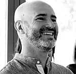

Quiénes somos
Arq. Federico Javier Ochoa (Fundador)
- Universidad Católica de Córdoba (UCC)
- Master en innovación en técnicas, sistemas y materiales de Construcción (Inst. E. Torroja - Madrid)
- Especialista en Diseño Estructural de Obras de Arquitectura (UNC)
+15 años de experiencia en diseño, desarrollo y construcción.
20.000 m2 construidos y 220.000 m2 de diseño urbano.
Ing. Micaela Inés Barriles (Socia)
Instituto Tecnológico de Buenos Aires (ITBA)
+15 años de experiencia en gestión de proyectos, logística de materiales,
comercialización, marketing y desarrollo institucional.